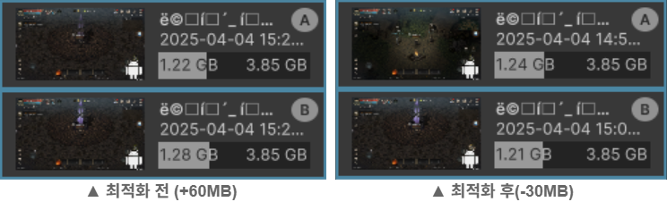

1. SpriteAtlas LateBinding
문제점
Bundle 사용 시 이미지를 SpriteAtlas.asset을 통해 가져오지 않고, Bundle에 포함된 SpriteAtlas를 사용. SpriteAtlas가 메모리에 중복 적재되는 문제 발견.
상황 : 게임 실행 직후 UICon, CashStore, SpriteAtlas 번들 다운로드 및 캐싱. (SpriteAtlas 15MB 적재)
- ex1) Inventory UI Open → UICon.asset에 포함된 SpriteAtlas 적재 (+15MB)
- ex2) 이어서 CashStore UI Open → CashStore.asset에 포함된 SpriteAtlas 적재 (+15MB)
SpriteAtlas의 메모리만 총 45MB 사용.
개선 내용
① SpriteAtlas.asset에 포함될 .spriteatlas들의 Include Build = false; 로 수정

*빌드 포함 여부
② 번들을 다운로드 하기 전에 SpriteAtlas 이벤트를 추가합니다.
*spriteAtlasManager.atlasRequested : 객체가 .spriteatlas를 참조하지만 찾지 못할 때 호출 이벤트
③ 번들 다운로드 받고 캐싱 후 타 번들이 .spriteAtlas를 찾지 못하도록 bundle.Unload(false)
결과
총 메모리 사용량 68.4MB → 11.9MB 로 최적화 (약 56.5MB 절감)

LateBinding 이전IconAtlas * 24ea / BgAtlas * 8ea / SpriteAtlas * 6ea
- UICon.asset만을 사용했을 뿐인데 Texture2D만 68MB 증가
- Icon, Bg, Sprite Atlas가 추가되어 기존에 있음에도 중복으로 적재
LateBinding 이후IconAtlas * 8ea / BgAtlas * 4ea / SpriteAtlas * 3ea
- UICon, CashShop.asset을 사용해도 atlas의 증가 없음
사용 기술
- SpriteAtlasManager.atlasRequested
- AssetBundle.Unload
- Unity SpriteAtlas Late Binding (cc - Manual)
2. SharedMap SpriteAtlas
문제점

- 각 맵마다 별도 Sprite 폴더 및 SpriteAtlas를 사용하고 있음에도, 실제 게임 실행 시 다른 맵의 SpriteAtlas가 참조되어 불필요한 중복 로딩 발생.
- 맵 제작 시 여러 맵에서 사용되는 하나의 맵 프리팹 사용으로 인한 SpriteAtlas 중복 적재 확인.
개선 내용
중복 방지 툴을 실행하여 공용으로 사용하는 Sprite들을 모아 SharedMap_SpriteAtlas.spriteatals를 제작하고, 각 맵 Prefab의 참조를 수정.

결과
Texture 메모리 사용량 25.2MB → 14.4MB (약 10.8MB 감소)
전체 메모리 사용량 1.39GB → 1.31GB (약 88MB 절감)

사용 기술
- Memory Profiler, Custom Editor Tool
- AssetBundle
3. Tilemap Property 중복 적재 제거
문제점
맵 이동 시 이전 맵의 Resource들이 해제되지 않고 누적되어 최대 208MB까지 중복 적재되는 현상 발생.
개선 내용

AssetBundle 로드 시에도 메모리에 적재됨을 확인. 적재된 메모리를 null처리로 Reference Count 감소 후, UnloadUnusedAssets 함수로 제거하여 이중 적재 및 누적 문제 해결.
결과
이전 맵 리소스 누적 문제 제거. 30~50MB 누적 → 약 7.7MB만 사용.

맵 6개 이동 시 메모리 증가량 비교: 최적화 전 60MB 증가 → 최적화 후 30MB 감소.

사용 기술
- Memory Profiler
- AssetBundle, Resources.UnloadUnusedAssets
4. 상시 적재되지만 사용하지 않는 AssetBundle 제거
문제점
Login Scene에서만 필요한 AssetBundle(영상, UI 등)이 게임 플레이 중에도 상시 메모리에 적재됨. RenderTexture의 명시적인 해제 처리 미흡.
개선 내용
기존 AssetBundle 캐싱 방식을 GameObject에서 AssetBundle 자체로 변경. 실제 사용 시에만 GameObject로 변환하여 사용. RenderTexture.Release()를 통해 메모리 해제.
결과
Login 전용 번들의 불필요한 상시 메모리 점유 해제로 Render Texture 메모리 해제. (-23.7MB)
사용 기술
- Memory Profiler
- AssetBundle, Resources.UnloadUnusedAssets
- VideoPlayer, RenderTexture.Release()
5. Big Size Texture 분류 및 번들화
문제점

SpriteAtlas 한 페이지 전체를 차지하는 고해상도 Texture 다수 발견. Atlas에 포함 시 Batch 수 감소 효과가 없고 불필요하게 Bundle 크기만 증가.
개선 내용
비효율적인 Sprite들을 선발하여, 큰 이미지들로만 구성된 별도의 AssetBundle로 번들화 진행.
결과
29페이지의 SpriteAtlas를 4페이지로 줄이며 Bache 수 감소 및 메모리 약 2~5MB 절감. 번들 사이즈 52.2MB → 7.2MB.